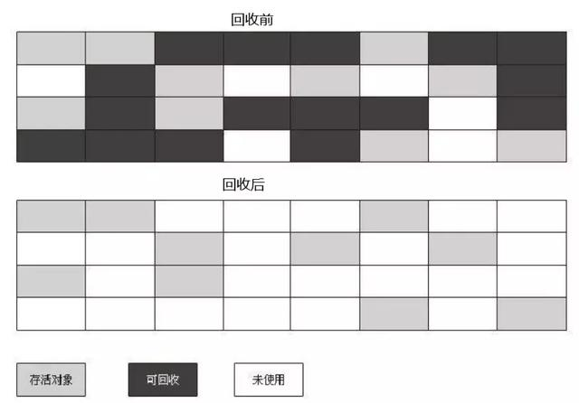
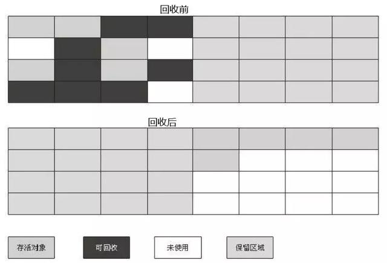
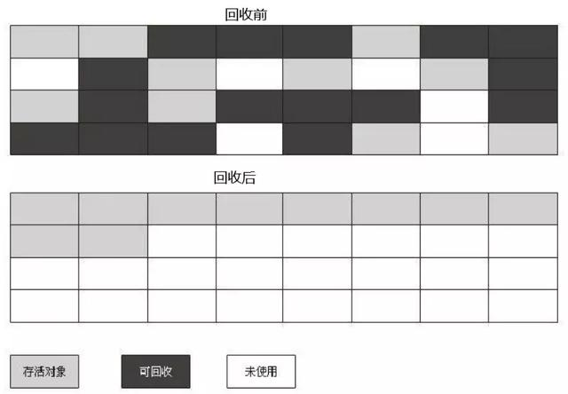
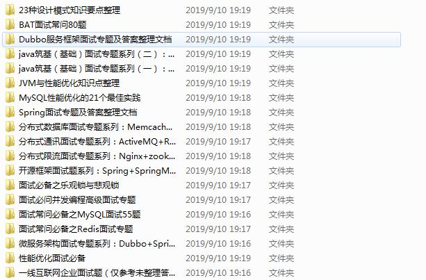

深入浅出JVM之垃圾收集算法原文出处:本文由博客园博主Java架构Monster提供。
原文连接:https://www.cnblogs.com/sevencutekk/p/11506313.html
判断哪些对象需要被回收
- 引用计数算法：
- 给对象中添加一个引用计数器，每当有一个地方引用时，计数器值就加1；当引用失效时，计数器值就减1；任何时刻计数器为0的对象就是不可能再被使用的。 但是JVM没有使用此方法，因为此方法无法解决2个对象相互循环引用的问题。
- 可达性分析算法：
- 这个算法的基本思路就是通过一系列的称为“GC Roots”的对象作为起始点，从这些节点开始向下搜索，搜索所走过的路径称为引用链（Reference Chain），当一个对象到GC Roots没有任何引用链相连时，则证明此对象是不可用的。
- 在Java语言中，可作为GC Roots的对象包括下面几种：
- 虚拟机栈（栈帧中的本地变量表）中引用的对象。
- 方法区中类静态属性引用的对象。
- 方法区中常量引用的对象。
- 本地方法栈中JNI（即一般说的Native方法）引用的对象。
JDK1.2以后的引用分为4种，引用强度依次逐渐减弱
- 强引用（Strong Reference）
- 强引用就是指在程序代码之中普遍存在的，类似Object obj=new Object()这类的引用，只要强引用还存在，垃圾收集器永远不会回收掉被引用的对象。
- 软引用（Soft Reference）
- 软引用是用来描述一些还有用但并非必需的对象。对于软引用关联着的对象，在系统将要发生内存溢出异常之前，将会把这些对象列进回收范围之中进行第二次回收。如果这次回收还没有足够的内存，才会抛出内存溢出异常。在JDK1.2之后，提供了SoftReference类来实现。
- 弱引用（Weak Reference）
- 弱引用也是用来描述非必需对象的，但是它的强度比软引用更弱一些，被弱引用关联的对象只能生存到下一次垃圾收集发生之前。当垃圾收集器工作时，无论当前内存是否足够，都会回收掉只被弱引用关联的对象。在JDK1.2之后，提供了WeakReference类来实现。
- 虚引用（Phantom Reference）
- 虚引用也称为幽灵引用或者幻影引用，它是最弱的一种引用关系。一个对象是否有虚引用的存在，完全不会对其生存时间构成影响，也无法通过虚引用来取得一个对象实例。为一个对象设置虚引用关联的唯一目的就是能在这个对象被收集器回收时收到一个系统通知。在JDK 1.2之后，提供了PhantomReference类来实现。
垃圾收集算法
- 标记-清除算法（Mark-Sweep）
- 此方法分为“标记”和“清除”两个阶段：首先标记出所有需要回收的对象，在标记完成后统一回收所有被标记的对象。它是最基础的收集算法，后续的收集算法都是基于这种思路并对其不足进行改进而得到的。
- 主要两个不足：一个是效率问题，标记和清除两个过程的效率都不高；另一个是空间问题，标记清除之后会产生大量不连续的内存碎片，空间碎片太多可能会导致以后在程序运行过程中需要分配较大对象时，无法找到足够的连续内存而不得不提前触发另一次垃圾收集动作。

- 复制算法（Copying）
- 此方法将可用内存按容量划分为大小相等的两块，每次只使用其中的一块。当这一块的内存用完了，就将还存活着的对象复制到另外一块上面，然后再把已使用过的内存空间一次清理掉。这样使得每次都是对整个半区进行内存回收，内存分配时也就不用考虑内存碎片等复杂情况，只要移动堆顶指针，按顺序分配内存即可，实现简单，运行高效。但是可用内存变成原来的一半，代价较大。
- 此方法一般用在回收新生代，因为新生代的对象98%都是很快就会被回收，所以不用1:1划分，而是分为一块较大的Eden空间和2块较小的Survivor空间。每次使用Eden和其中一块Survivor。当回收时，将Eden和Survivor中还存活着的对象一次性地复制到另外一块Survivor空间上，最后清理掉Eden和刚才用过的Survivor空间。HotSpot虚拟机默认Eden和Survivor的大小比例是8:1:1，即新生代中可用内存为90%，只有10%被浪费。

- 标记-整理算法（Mark-Compact）
- 复制收集算法在对象存活率较高时就要进行较多的复制操作，效率将会变低。更关键的是，如果不想浪费50%的空间，就需要有额外的空间进行分配担保，以应对被使用的内存中所有对象都100%存活的极端情况，所以在老年代一般不能直接选用这种算法。
- 根据老年代的特点，有人提出了另外一种“标记-整理”（Mark-Compact）算法，标记过程仍然与“标记-清除”算法一样，但后续步骤不是直接对可回收对象进行清理，而是让所有存活的对象都向一端移动，然后直接清理掉端边界以外的内存。

- 分代收集算法（Generational Collection）
- 当前商业虚拟机的垃圾收集都采用“分代收集”算法，这种算法并没有什么新的思想，只是根据对象存活周期的不同将内存划分为几块。一般是把Java堆分为新生代和老年代，这样就可以根据各个年代的特点采用最适当的收集算法。在新生代中，每次垃圾收集时都发现有大批对象死去，只有少量存活，那就选用复制算法，只需要付出少量存活对象的复制成本就可以完成收集。而老年代中因为对象存活率高、没有额外空间对它进行分配担保，就必须使用“标记—清理”或者“标记—整理”算法来进行回收。
最后，小架这里最近收集了很多关于JAVA的面试题（附答案），分享给大家！

也希望能够帮助到正在找工作的小伙伴们，同时也感谢大家读到了这里, 万分感谢！
请+3078530153获取哦！
我是小架，我们下篇文章见！